Vozes e memórias: histórias que o rádio guardou na Vila Conceição I
Em meio a canções, notícias, lembranças afetivas e relatos de resistência, moradores da Vila Conceição I revelam como o rádio acompanhou suas vidas, aproximou pessoas e se tornou parte da memória de uma comunidade rural de Imperatriz, no Maranhão.
A Vila Conceição I surgiu da ocupação de uma grande área de terra, realizada por 250 famílias oriundas de 29 povoados pertencentes ao município de Imperatriz. Eram homens e mulheres que sonhavam em conquistar seu próprio pedaço de chão para trabalhar e garantir a sobrevivência de suas famílias.
A conquista ocorreu em 16 de julho de 1987. Em meio a foices, facões, machados e à resistência dos posseiros, lá estava o rádio, fazendo parte do cotidiano dos recém-chegados à Fazenda Itacira. Além de levar notícias e entretenimento, o aparelho fazia companhia, aproximava moradores e acompanhava as transformações que estavam por vir.
Inicialmente, a área ocupada manteve o nome original da propriedade, Fazenda Itacira, herdado do antigo proprietário. Com o passar do tempo, porém, os próprios assentados passaram a chamá-la de "Fazenda Criminosa", em referência aos conflitos entre as famílias ocupantes e os antigos donos do terreno. Os moradores mais antigos recordam aquele período como um tempo de medo e tensão, marcado, segundo seus relatos, por mortes.
Naquele início de formação da Vila Conceição I, o rádio assumiu diferentes significados na vida dos moradores. Se, em alguns momentos, era fonte de alegria, entretenimento e companhia, em outros, as notícias transmitidas pelas ondas sonoras provocavam medo e aumentavam a insegurança das famílias que lutavam para permanecer na terra.
Em seu relato, Maria Querubina recorda as notícias transmitidas pela Rádio Imperatriz e o clima de medo e apreensão que elas provocavam entre as famílias do assentamento.
Segundo Maria Querubina da Silva Neta, uma das moradoras mais antigas da comunidade e liderança do processo de ocupação, o radialista Moacyr Spósito Ribeiro, proprietário da Rádio Imperatriz Sociedade Ltda, mantinha uma relação de amizade com um dos fazendeiros envolvidos na disputa pela área, que era próxima a sua fazenda.
Querubina relembra que, todas as manhãs, durante o programa Café da Manhã, Moacyr utilizava os microfones da emissora para transmitir mensagens que, na percepção dos posseiros, tinham o objetivo de intimidá-los e pressioná-los a deixar a terra. As palavras chegavam pelo rádio a famílias que já enfrentavam as incertezas e os conflitos provocados pela ocupação. A pressão, segundo ela, levou muitos moradores a abandonarem a área.
O medo provocado pelas notícias veiculadas no rádio gerou incertezas entre as famílias e levou muitas delas a deixar o assentamento.
"Teve muita gente que foi embora", recorda a liderança, ao relembrar um período em que o rádio, além de informar e entreter, também fazia parte das tensões vividas pelos primeiros moradores da Vila Conceição I.
O rádio como testemunha da história de moradores da Vila Conceição I
Era 10 de outubro de 2026. À sombra de uma mangueira, em uma tarde de sábado, enquanto o sol se despedia no horizonte, o lavrador Manoel Ferreira Cesar, de 72 anos, natural de Campo Grande, em Alagoas, e morador da Vila Conceição I há 30 anos, compartilhou experiências marcadas por afeto, amor e companheirismo em sua relação com o rádio.
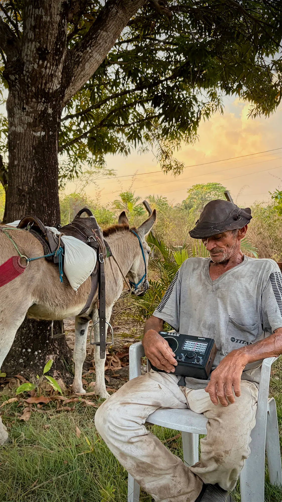
Manoel e sua companhia de longa data, o rádio.
A conversa aconteceu em frente à minha casa na roça, a Chácara Nazareno. Eu já havia tentado várias vezes encontrar o agricultor Manoel em sua residência, na comunidade, mas sem sucesso. A dificuldade tinha uma explicação: ele é um homem da roça, cuja rotina é marcada pelo trabalho no campo.
Por isso, fiquei na expectativa, à espera de que ele passasse pela estrada rural que dá acesso à sua plantação e segue em frente à minha chácara. E não deu outra! Minha irmã, Eliene, avistou-o montado em seu jumento, carinhosamente chamado de Brilhoso, seu fiel companheiro, há dez anos, nas idas e vindas diárias à roça.
Manoel contou que encontrou Brilhoso ferido no caminho para a roça. Recolheu o animal e cuidou dele até que se recuperasse. Na época, esperava que o dono aparecesse para buscá-lo, mas isso nunca aconteceu. Com o passar do tempo, o jumento tornou-se seu companheiro de jornada, presente na rotina de trabalho no campo.
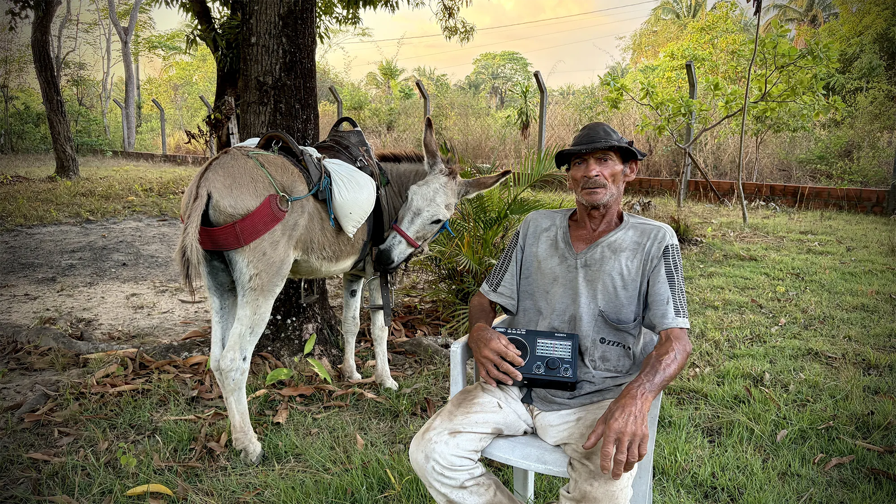
Brilhoso, o jumento e fiel companheiro de seu Manoel Ferreira na labuta diária do campo.
Minha irmã chamou seu Manoel Ferreira Cesar e explicou que eu gostaria de conversar com ele. Prontamente, o agricultor atendeu e entrou na chácara, pois já sabia do assunto. Em seguida, amarrou Brilhoso ao tronco da mangueira e começou a contar sua história com o rádio.
Seu Manoel é magro, de pele clara, olhos pretos, barba e cabelos grisalhos, usa um chapéu de couro que compõe sua aparência de homem do campo. Sua pele, um pouco avermelhada, parece carregar as marcas dos longos dias de trabalho sob o sol.
Durante a conversa, ele contou que o rádio está presente em sua vida desde a infância, quando acompanhava o pai, que já tinha o hábito de ouvir esse meio de comunicação. Segundo Manoel, sua relação com o rádio se fortaleceu aos 16 anos e permanece viva até hoje.
Detalhes da juventude e histórias vividas por seu Manoel com o rádio, lembranças que o tempo não apagou e que ele nunca esqueceu.
Ele afirma que seu primeiro aparelho funcionava com três pilhas da marca Rayovac. Por meio do rádio, ouve músicas, acompanha as horas e se mantém informado sobre os acontecimentos do Brasil. Para ele, o aparelho é mais do que uma fonte de informação e entretenimento: é um companheiro que atravessa diferentes fases de sua vida e permanece presente em seu cotidiano.
O rádio é um portador que conta histórias e é uma diversão do começo da vida da gente
— seu Manoel
Memórias que o tempo não apaga
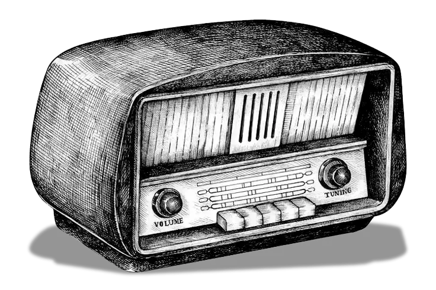
Imagem ilustrativa
Fonte: Pinterest
Entre as lembranças que seu Manoel guarda dessa relação com o rádio está a voz de Pajeú, radialista da Rádio Palmeira dos Índios, em Alagoas, que marcou sua memória nas décadas de 1970 e 1980. Segundo ele o locutor despertava os nordestinos nas primeiras horas da madrugada, tornando-se uma presença familiar para os ouvintes daquela época.
Pajeú tinha como costume contar histórias em versos no rádio. Confira aqui um pouco da performance dele:
O matuto no futebol. Fonte: Youtube, Anchieta Gueiros.
Ao recordar esse período, Manoel começa a cantarolar os versos de uma música que ouviu no rádio e que marcou sua vida. A melodia parece trazê-lo de volta à juventude. Com entusiasmo, ele recita um trecho da canção:
"Eita danadinha dos zóio matadô / eu não troco o mundo pelo teu amor. / Eu já fiz promessa com o protetor / pra que ela volte para o nosso amor. / Se ela voltar alegre como o vento / eu chamo o seu vigário e faço o casamento."
A música, conforme as informações sobre a gravação, integra o repertório do álbum Forró do Bom, lançado em disco de vinil pela gravadora e fábrica de discos Rozenblit, no final da década de 1960. A obra é atribuída a Agripino Aroeira e Onildo Almeida. Essa canção permanece viva nas lembranças do agricultor. Mais do que recordar uma música antiga, Manoel revive uma época em que o rádio fazia parte de sua rotina e dava voz aos sentimentos que ele carregava.
Pergunto o que aquela música representava para ele naquele tempo. A resposta revela que a lembrança vai muito além da melodia: ao ouvi-la, ele se recordava de sua noiva, a mulher com quem se casou e com quem compartilha a vida há 56 anos.
A música que faz seu Manoel recordar seu único e verdadeiro amor: sua esposa, com quem compartilha uma vida de amor e companheirismo há cinco décadas.
Assim, entre versos cantados e recordações, o rádio revela parte da história de amor de Manoel. Uma história em que a música atravessou o tempo, acompanhou o nascimento de um sentimento e permanece guardada na memória de quem encontrou, nas ondas sonoras, a trilha de sua própria vida.
Apesar de todo esse encantamento pelo rádio, que continua sendo seu companheiro inseparável, Manoel revela que nunca telefonou para uma emissora, nunca enviou cartas a programas radiofônicos e nunca visitou um estúdio de rádio. Sua relação com o veículo se construiu de outra maneira: pela escuta diária, pelas músicas, pelas notícias e pela companhia que encontra nas ondas sonoras.
O rádio, companheiro de todas as horas
Pergunto se a rádio teve alguma participação no processo de formação da Vila Conceição I. Seu Manoel é categórico ao afirmar que não participou desse processo. Segundo ele, adquiriu sua terra, há 30 anos, por meio de um contrato de compra e venda com o primeiro possuidor do lote. Atualmente, mantém no local sua criação de gado e suas plantações.
A relação de Manoel com o rádio permanece como parte importante de sua história pessoal. A rotina começa cedo: ele acorda às quatro horas da manhã e liga o aparelho enquanto toma café. Depois, coloca o rádio na bolsa, monta em Brilhoso e segue para a roça. Assim, entre o trabalho no campo e as tarefas diárias, o som do rádio continua acompanhando seus passos. Durante a labuta na roça, mantém o aparelho ligado para acompanhar as notícias, ouvir músicas e se orientar pelas horas.
Nem mesmo a chegada de novas tecnologias, como o celular e a televisão, mudou sua preferência. Embora reconheça que a televisão permite ver as imagens enquanto apresenta as notícias, Manoel não abre mão de seu velho companheiro. Para ele, o rádio continua ocupando um lugar especial, insubstituível, em sua rotina e em suas lembranças.
O rádio está em primeiro lugar, nunca vou esquecer o rádio. Eu amo o rádio, eu gosto do rádio. Pode ter a televisão, pode ter o celular, pode ter o relógio, mas o meu rádio em primeiro lugar.
— seu Manoel
O tempo passou, novas tecnologias chegaram, mas o rádio continua ocupando um lugar especial na vida de seu Manoel.
A declaração sintetiza uma relação construída ao longo de décadas. Para Manoel, o rádio não é apenas um aparelho eletrônico: é presença, companhia e memória. Está com ele ao amanhecer, durante o trabalho na roça e nas lembranças de uma juventude em que uma canção era capaz de fazê-lo recordar a mulher amada. Mesmo sem nunca ter participado de um programa ou entrado em um estúdio, ele construiu com o rádio um vínculo particular, feito de escuta, afeto e fidelidade.
Quando ouvir rádio era um encontro coletivo
Aos 81 anos, Maria Querubina da Silva Neta carrega na própria trajetória as marcas da luta e da resistência. Lavradora, mãe solo de quatro filhas e avó de três netos, nasceu em Santo Antônio dos Lopes, no Maranhão, e chegou a Imperatriz em 1971. Na cidade, começou a participar das Comunidades Eclesiais de Base (CEBs) e do Sindicato dos Trabalhadores Rurais de Imperatriz, do qual permanece membro ativo. Sua história se entrelaça à organização dos trabalhadores, à luta por direitos e à
construção da comunidade Vila Conceição I, onde vive há 39 anos e se tornou uma das principais lideranças.
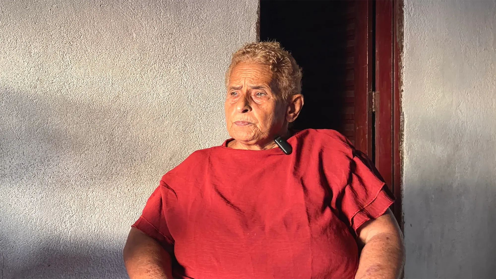
É na sala de casa que Maria Querubina revisita suas memórias e compartilha experiências vividas ao lado do rádio.
Muito antes de participar das mobilizações coletivas e da luta por direitos, Querubina já havia descoberto outra forma de se conectar com o mundo: o rádio. Na infância e na juventude, em Santo Antônio dos Lopes, o aparelho era um bem raro, ao qual poucos moradores tinham acesso. Ainda assim, bastava alguém ligar o rádio para que outras pessoas se aproximassem. Em torno daquele pequeno aparelho, vozes distantes atravessavam fronteiras e despertavam a curiosidade de quem, muitas vezes,
não tinha outra maneira de acompanhar o que acontecia além de sua própria realidade.
Eram poucas pessoas que tinham rádio e, quando a gente escutava, achava uma coisa muito interessante, porque, do outro lado do mundo, a gente estava ouvindo o pessoal falando
— Maria Querubina
Na casa de sua família, não havia rádio. Segundo ela, apenas dois moradores de sua cidade natal possuíam o aparelho, cujo preço dificultava o acesso. Para ouvir a programação, Querubina se reunia com cerca de 20 pessoas na residência de um desses moradores. O que hoje pode parecer um hábito simples era, naquele tempo, uma experiência compartilhada: vizinhos se encontravam para ouvir músicas, acompanhar notícias e descobrir, pelas ondas sonoras, acontecimentos de lugares distantes.
Entre as emissoras que acompanhava estava a Rádio Nacional da Amazônia. Querubina passava horas diante do rádio, atenta às vozes dos locutores e às informações transmitidas. Entre seus preferidos estavam Edelson Moura e Márcia Ferreira. Embora não conhecesse pessoalmente os apresentadores, sabia seus nomes e reconhecia a presença familiar de suas vozes.
"Edelson Moura e Márcia ficaram conhecidos no mundo inteiro só através daquela zoada do rádio. A gente não via, mas sabia o nome deles. 'Vamos ouvir o programa da Márcia Ferreira mais o Edelson Moura'", conta.
Ao tentar recuperar as lembranças musicais daquele período, Querubina já não consegue recordar muitas canções. Uma delas, porém, ressurge em sua memória: Obrigada ao Homem do Campo, música do repertório sertanejo de raiz, composta pela dupla Dom e Ravel, em 1971. A canção também ficou famosa na voz da dupla sertaneja César e Paulinho, além de ter sido gravada por outros artistas, como Sérgio Reis.
Durante a entrevista, Maria Querubina se arrisca a cantar alguns versos, enquanto relembra a época em que era mais jovem. Sua fala também revela certa mágoa ao afirmar que, naquele período, as músicas tinham letras que expressavam gratidão e reconhecimento aos trabalhadores do campo, algo que, em sua percepção, já não existe atualmente.
Obrigado ao homem do campo pelo leite / o café e o pão / Deus abençoe os braços que fazem / o suado cultivo do chão
Querubina revive a alegria de ouvir uma das canções que marcaram sua juventude e sua história com o rádio.
Mas, para além das melodias, foram as notícias que mais profundamente marcaram sua relação com a rádio.
A programação trazia relatos sobre as condições de vida das populações do interior da Amazônia, especialmente as dificuldades de acesso à saúde e a serviços essenciais. As informações a impressionavam e provocavam angústia. Enquanto ouvia, Querubina tomava conhecimento de realidades que, embora distantes, pareciam próximas quando chegavam pela voz dos locutores.
"O pessoal da Amazônia não sabe o que é doutor, não sabe o que é hospital, tem muita gente doente na Amazônia. A gente ficava muito agoniada com essas notícias que eles davam", revela Querubina.
Naquelas reuniões em torno do rádio, ouvir era também descobrir, imaginar e se preocupar com a vida de outras pessoas. As vozes que chegavam de longe ampliavam os horizontes de quem vivia no interior maranhense e transformavam um aparelho compartilhado em uma janela para o mundo.
Entre a companhia do rádio e o medo das notícias
As lembranças de Maria Querubina sobre o rádio, desde antes do processo de fundação da Vila Conceição I, revelam sentimentos que remetem ao veículo como companheiro nos afazeres diários. Por meio das vozes dos apresentadores, o rádio levava notícias e proporcionava momentos de descontração, mas também despertava medo quando as informações transmitidas chegavam aos ouvintes em tom de ameaça.
É o que revela Maria, ao recordar os momentos de conflito vividos pelos moradores da comunidade, durante o período da sua fundação. Naquele contexto, o rádio não servia apenas como entretenimento, mas também se tornava um instrumento capaz de despertar medo entre os posseiros recém-assentados na terra.
A voz dos locutores ecoava pelo rádio, levando notícias que ficaram gravadas na memória de quem viveu os desafios da luta pela terra.
Outro episódio marcante na história dos moradores da Vila Conceição I revela mais uma dimensão do rádio: sua função de utilidade pública e sua capacidade de ampliar a voz das pessoas da comunidade.
No início da ocupação, as famílias foram retiradas da terra pela Polícia Militar, em cumprimento a uma determinação judicial, por meio de uma liminar. Os sem-terra foram despejados da Fazenda Itacira, área onde atualmente está localizada a Vila Conceição I, no dia 4 de setembro de 1987.
Diante da situação, os moradores recorreram aos meios de comunicação para denunciar o despejo das 250 famílias que ocupavam a terra.
Por meio de um comunicado enviado às emissoras de rádio da cidade, entre elas a Rádio Imperatriz, os moradores se mobilizaram para tornar a situação conhecida pela imprensa local e regional, pela população em geral e pelas autoridades.
A divulgação teve grande repercussão e contribuiu para que providências fossem tomadas, permitindo que as famílias retornassem à área no dia 14 de setembro do mesmo ano, após permanecerem fora dela por apenas dez dias.
1987 — Os marcos da fundação
16 de julhoOcupação da Fazenda Itacira — fundação da Vila Conceição I
4 de setembroDespejo das famílias pela Polícia Militar, por liminar judicial
14 de setembroRetorno das famílias à terra, após mobilização via rádio
Histórias de quem vivenciou a luta pela terra e reconhece a importância da comunicação na formação da comunidade.
Assim, entre o medo provocado pelas notícias e a esperança despertada pela mobilização, o rádio ocupou um lugar importante na trajetória da Vila Conceição I. Se, em determinados momentos, suas ondas sonoras eram percebidas como uma ameaça, em outros, tornavam-se um caminho para denunciar injustiças e fazer ecoar a voz dos posseiros.
Atualmente, a lavradora Maria Querubina, não possui rádio em casa, divide o tempo assistindo noticiário da TV aberta e interagindo entre uma ligação e outra pelo celular. Mas afirma sentir falta de um rádio, principalmente quando vai para a mata quebrar coco, e planeja comprar um aparelho novo, para ser sua companhia no trabalho de extração da amêndoa do babaçu.
Rádio, mais do que um sonho, uma paixão
Aos 16 anos, em 1987, dei os primeiros passos em direção a um sonho que, até então, existia mais na imaginação do que na realidade: ser radialista e repórter.
Não me recordo exatamente do mês nem do dia, mas guardo na memória a decisão de sair de casa sozinha e ir ao encontro daquele sonho. Peguei o transporte coletivo e segui até a Rua Simplício Moreira, em Imperatriz, Maranhão, onde funcionava a Rádio Imperatriz, pioneira na radiodifusão da cidade.
Naquele momento, eu ainda não sabia que aquela visita marcaria o início de uma relação com o rádio que atravessaria décadas e permaneceria viva em minhas lembranças.
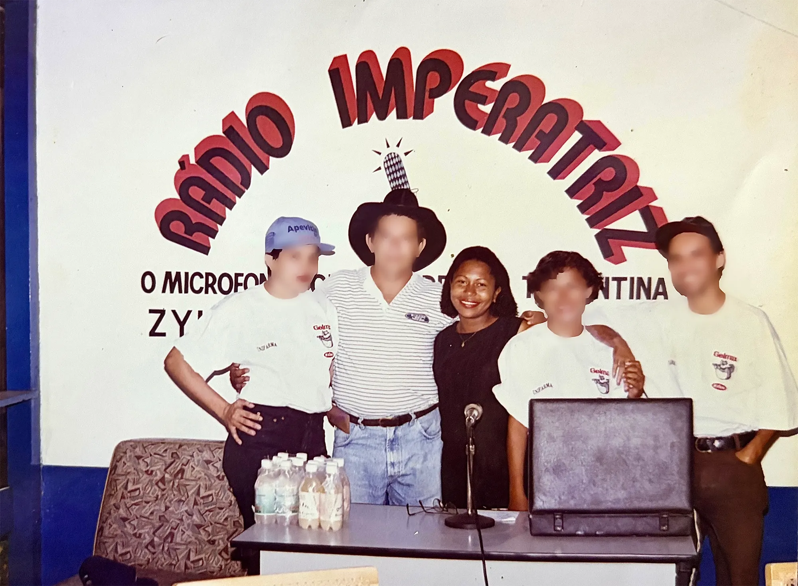
Rita Maria, atuando como locutora em uma transmissão ao vivo no parque de Exposições Agropecuária de Imperatriz-MA. — Fonte: Acervo Pessoal
À época, o diretor artístico da emissora era Manoel Cecílio Ribeiro, que também comandava o "Rádio Festa", programa líder de audiência no período da manhã. O rádio estava presente no cotidiano dos imperatrizenses e chegava às casas pela voz de seus comunicadores, estabelecendo uma relação de proximidade com os ouvintes que ultrapassava os limites do aparelho receptor.
Ainda está muito presente na minha memória a primeira vez que entrei na Rádio Imperatriz. Recordo-me de cada detalhe. Ao chegar ao prédio, encontrei uma escada com cerca de dez degraus que dava acesso à recepção. Subi e, logo na entrada, deparei-me com dois bancos de cimento queimado, cuidadosamente lustrados, cuja aparência me chamou a atenção pelo brilho. Um deles ficava de frente para a escada de quem chegava à emissora; o outro, na lateral, diante do balcão da recepção.
Foi ali que encontrei uma moça simpática, a recepcionista, Isabel Cristina. Era uma mulher branca, de olhos escuros e cabelos encaracolados, que lhe chegavam ao meio das costas.
— Meu nome é Rita Maria. Quero uma oportunidade para trabalhar na rádio. Eu falo com quem?
A recepcionista respondeu:
— Com o diretor artístico, Manoel Cecílio. Mas ele está no ar. Espere ele terminar o programa. Quando ele sair, vejo se ele pode receber você.
A espera parecia interminável. Eu havia chegado cedo e estava ansiosa para falar com Manoel Cecílio, um locutor que, para mim e para grande parte da cidade, era uma referência. Ele comandava um dos programas de maior audiência da emissora e também apresentava, em parceria com o proprietário da rádio e diretor-geral, Moacyr Spósito, o jornal "890", transmitido ao meio-dia. A Rádio Imperatriz foi inaugurada em 28 de outubro de 1978, transmitindo ao vivo seu primeiro programa,
apresentado por Moacyr. Confira o áudio do primeiro programa:
Transmissão do primeiro programa Rádio Imperatriz, com a locução de Moacyr Spósito - diretor da Rádio Imperatriz Sociedade Ltda. — Fonte: JOIMP.
Quando o programa terminou, Manoel Cecílio me recebeu em uma sala próxima à recepção. Foi cordial, mas logo deixou claro que não seria tão simples conseguir aquela oportunidade.
Não perdi tempo. Disse a ele que queria trabalhar no rádio como repórter. A primeira pergunta foi sobre a minha idade. Respondi que tinha 16 anos.
— Não posso lhe dar um estágio. Você é muito nova. Vá estudar — disse ele.
Insisti. Expliquei que trabalhar com comunicação era minha grande paixão e que poderia conciliar os estudos com o trabalho, caso ele me desse uma oportunidade.
Depois de me ouvir, Manoel Cecílio respondeu:
— Volte amanhã com seu pai. Ele precisa autorizar seu estágio, porque você é menor de idade.
Saí daquela sala em direção à minha casa sem acreditar completamente que o meu sonho poderia se realizar. Desci as escadas quase flutuando. Estava em êxtase.
No dia seguinte, meu pai foi comigo à rádio e assinou o documento autorizando meu estágio como repórter. Naquela mesma semana, comecei meu aprendizado no departamento de jornalismo da emissora, um setor bastante movimentado.
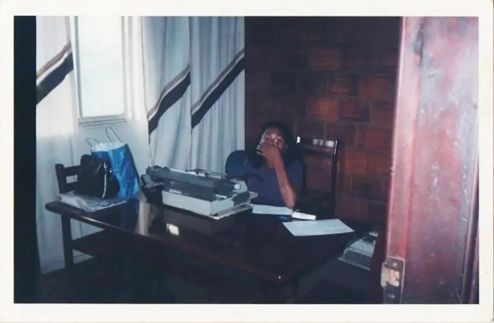
Local onde escrevia e transformava as histórias em reportagens. — Fonte: Acervo Pessoal
O chefe de redação era o radialista e jornalista Arimatéia Júnior, que comandou o jornal "890" por alguns anos.
Foram três meses de estágio, sem remuneração. Naquele período, eu saía todos os dias para fazer entrevistas para o jornal. Recebia a pauta pronta, com os assuntos do dia, o nome dos entrevistados e o local onde deveria encontrá-los.
Eu usava um gravador de fita cassete grande, movido a pilhas, que carregava comigo durante as entrevistas. Foi assim que comecei a conhecer pessoas e histórias que ajudaram a construir minha relação com o jornalismo e com o rádio.
Algumas personalidades daquele período permanecem vivas na minha memória. Entre elas, o presidente da subseção da OAB de Imperatriz, doutor Aureliano Neto, e Renato Cortez Moreira, que, na década de 1990, ocupou o cargo de diretor da Receita Federal em Imperatriz. Mais tarde, Renato Cortez Moreira deixou o cargo e concorreu à Prefeitura de Imperatriz, sendo eleito. Seu mandato, porém, foi interrompido por sua morte, em 6 de outubro de 1993, nas proximidades de sua residência.
Outra figura que eu entrevistava com frequência era o vereador do PT Valdinar Barros. Ele estava sempre disponível e fazia parte das pautas praticamente todas as semanas, por ser, à época, considerado o único vereador de oposição com atuação no legislativo municipal naquele período.
É assim que minha história com o rádio foi se construindo. Em 1997, ano em que nasceu meu filho mais velho, Vinícius, ganhei a oportunidade de apresentar um programa próprio na rádio, chamado "De Mulher para Mulher".
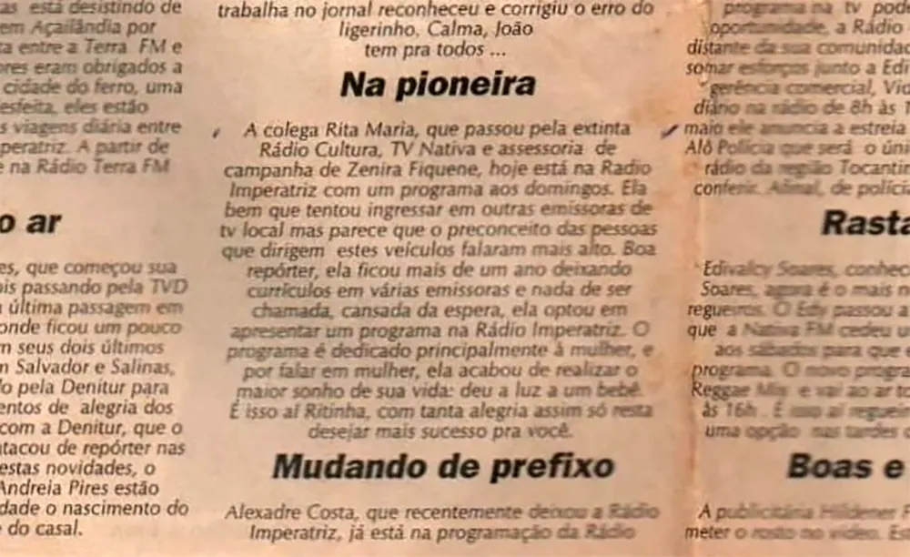
Histórias que ficaram guardadas na memória e registradas nas páginas dos jornais. — Fonte: Jornal o Progresso, edição de Domingo, 25 de Abril de 1999.
O programa era ao vivo e ia ao ar aos domingos, das 13h às 15h. Depois de um ano, passei a apresentá-lo também aos sábados, no período da manhã. No sábado, ganhei um reforço maravilhoso: os locutores Valdinez Lima e Carlos Ribeiro passaram a apresentar o programa comigo.
Era uma revista eletrônica, com variedade de assuntos, informações de interesse comunitário, notícias factuais e entrevistas com personalidades, principalmente mulheres.
Eu atendia a pedidos de alôs e músicas por meio de cartas e ligações telefônicas. Nesse período, pude compreender um pouco mais dessa relação de afetividade e carinho que os ouvintes estabelecem com os comunicadores. Era uma relação carregada de afeto, sentimentos e proximidade, uma interação que acontecia naturalmente entre quem estava diante do microfone e quem acompanhava a programação do outro lado do rádio.
Os ouvintes criavam uma espécie de intimidade com os apresentadores dos programas. Aos poucos, passávamos a integrar seus cotidianos. Era uma relação de amizade. Lembro-me, especialmente, de dois ouvintes: Joana Darc, do Sacolão Central, localizado na Rua Simplício Moreira, que ainda permanece em funcionamento, e seu Zé, vigia do setor mercadinho. Essas duas figuras ligavam para todas as edições do programa. Com o tempo, bastava ouvir suas vozes para que eu já soubesse quem estava do
outro lado da linha. Era como se fizessem parte da minha família.
Reencontro com Joana Darc
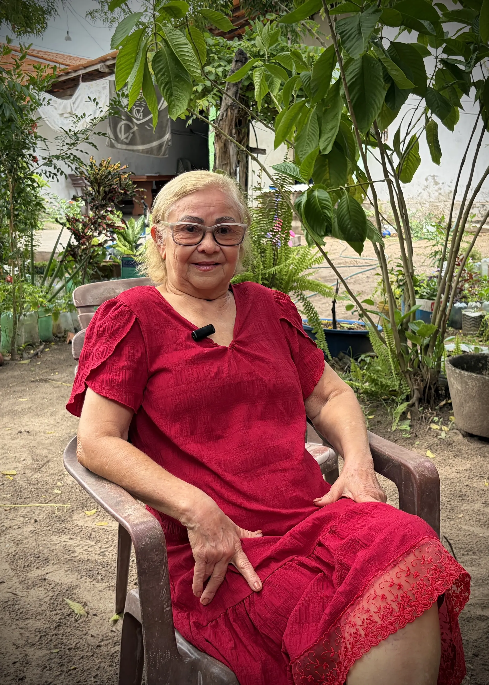
Joana Darc, uma das ouvintes do programa De Mulher pra Mulher.
Com Joana Darc da Costa Sousa, de 75 anos, natural da cidade de Luís Gomes, Rio Grande do Norte, minha ouvinte da época da Rádio Imperatriz, criei um laço de amizade que ultrapassou a voz e o microfone.
Recordo-me de que ela foi à rádio pela primeira vez para me conhecer e logo construímos uma relação de amizade. Como trabalhava na mesma rua onde estava localizado o prédio da emissora, a cerca de duzentos metros de distância, eu costumava passar no Sacolão Central, ao terminar o programa, para conversar com Joana.
Quando deixei a rádio, no final dos anos 2000, já não trabalhava como locutora. Decidi empreender e criei meu próprio negócio: uma agência de publicidade. Nesse período, perdi o contato com Joana. Só agora consegui reencontrá-la.
Foi fácil encontrar a ouvinte Joana, fui ao seu antigo local de trabalho, o Sacolão Central, onde ela trabalhou por 25 anos. Não foi tão difícil conseguir seu contato. No sacolão, encontrei seu irmão, o senhor Neto, proprietário do estabelecimento. Conversei com ele, que logo me passou o contato de Joana Darc. Fiz uma ligação, marquei um encontro e fui até sua casa, no bairro Bacuri, na cidade de Imperatriz, Maranhão.
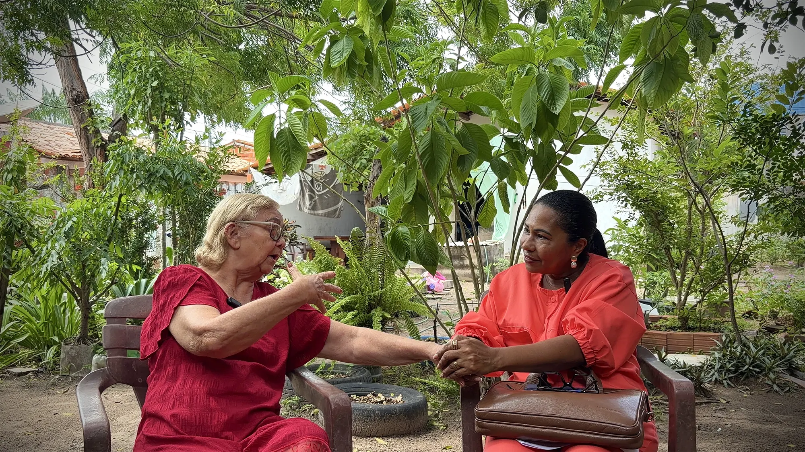
Um reencontro carregado de emoção, que aproximou novamente duas histórias ligadas pelo rádio: a da locutora e a da ouvinte.
Quando nos vimos, a emoção tomou conta de nós. Cumprimentamo-nos com um longo abraço. Joana me ofereceu um café, que aceitei, e expliquei que gostaria que ela desse um depoimento, contando por que ligava para todas as edições do meu programa.
Confesso que a resposta me surpreendeu muito. Joana Darc me disse que nunca havia esquecido de mim e nem da minha voz.
Rita Maria, pra falar a verdade, eu nunca te esqueci, nem um minuto. Às vezes, passa aquele filme, aí lembro: meu Deus, será que ainda vou ver aquela criatura? Eu amava ligar pra ti, pra te ouvir, pra ouvir tua voz.
— Joana Darc
A emoção de Joana ao falar da amizade entre ouvintes e locutores mostra que o rádio vai além da informação: aproxima pessoas, ameniza a solidão e cria vínculos afetivos.
Naquele momento, as lágrimas corriam pelo rosto da ouvinte. Fiquei muito emocionada e chorei também. Nunca imaginei que aquelas lembranças fossem tão significativas para Joana Darc e para mim também. O reencontro mostrou que a relação construída por meio do rádio havia deixado marcas profundas, capazes de resistir à passagem do tempo e à distância.
Não consegui encontrar o ouvinte Zé Vigia, mas permanecem as lembranças e a saudade de um tempo em que ligar para uma locutora representava muito mais do que uma troca de palavras. Era uma demonstração de afeto e carinho, que se transformava em amizade, construída pela presença diária de uma voz que acompanhava os ouvintes em suas atividades cotidianas e, aos poucos, passava a fazer parte de suas vidas.
Escreva uma carta, meu amor: quando a distância cabia dentro de um envelope
Confesso que comecei a escrever esta parte do texto tomada pela emoção, ao relembrar como, na década de 1990, o desejo de proximidade muitas vezes era traduzido em uma simples carta enviada a um programa de rádio.
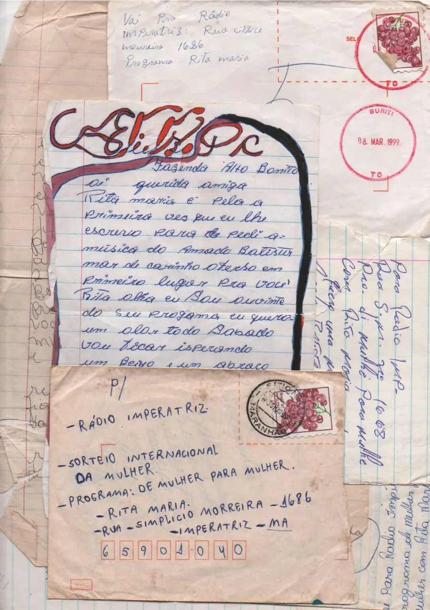
Palavras escritas que faziam a ponte entre o ouvinte e a locutora. - Veja mais cartas em nossa galeira no fim da reportagem
É justo, portanto, contar essa história sobre a relação de proximidade construída entre ouvintes e locutores por meio das cartas, tendo como referência um trecho da canção gravada por Roberto Carlos, em 1965, durante a Jovem Guarda, composta pelos irmãos Antônio Ladislau da Silva e Sebastião Ladislau da Silva: "Escreva uma carta, meu amor, e diga alguma coisa, por favor". Confira a música completa, a seguir.
Fonte: Youtube.
A canção, de caráter romântico, também nos remete a uma forma de comunicação que marcou a vida de muitas pessoas. Antes das mensagens instantâneas, dos aplicativos e das redes sociais, era por meio do papel, da tinta e do tempo de espera que sentimentos, notícias, pedidos e histórias chegavam às mãos de quem estava do outro lado do rádio.
Naquele tempo, uma carta enviada ao programa não era apenas uma mensagem. Era uma forma de estar presente, de ser ouvido e, de alguma maneira, de pertencer àquele universo sonoro que entrava diariamente nas casas.
No meu programa, na Rádio Imperatriz, as cartas eram lidas no ar e aproximavam pessoas separadas pela distância. Bastava que eu lesse as palavras escritas e transmitisse os recados para que o destinatário, do outro lado do rádio, sentisse que aquela mensagem havia atravessado quilômetros para chegar até ele, levando carinho, acolhimento e saudade.
Os conteúdos eram variados: pedidos musicais, alôs, declarações de afeto e recados destinados a familiares que viviam longe. Algumas cartas traziam listas com vários nomes de pessoas de diferentes localidades, numa tentativa de alcançar, pela voz da locutora, amigos e parentes espalhados pela região.
Essa troca de mensagens revelava a dimensão da comunicação estabelecida pela Rádio Imperatriz, cuja transmissão alcançava mais de 70 cidades, segundo minhas lembranças, em áreas do Maranhão, do Pará e do então norte de Goiás, atual Tocantins. Assim, a emissora ultrapassava fronteiras geográficas e fazia do rádio um elo entre pessoas, famílias e comunidades.
Hoje, ao reencontrar essas cartas enviadas pelos meus ouvintes, percebo que recordá-las vai além da nostalgia. É compreender a dimensão das relações interpessoais e afetivas construídas por meio do rádio e preservadas no papel, atravessando décadas.
Dessa relação de carinho e proximidade, guardo, em meu arquivo pessoal algumas cartas que recebi durante os anos em que estive à frente do microfone. São registros de uma época em que o rádio não apenas informava e entretinha, mas também aproximava pessoas, comunidades e histórias.
Uma delas foi escrita por Ângela Oliveira de Sousa, em 6 de agosto de 1998, do Centro do Raimundão, em Buritirana, no Maranhão. Endereçada ao programa de "Mulher Pra Mulher" apresentado por mim e os locutores Valdineis Lima e Carlos Ribeiro, a carta trazia um pedido musical e, ao mesmo tempo, uma longa lista de nomes de pessoas para quem a música deveria ser oferecida:
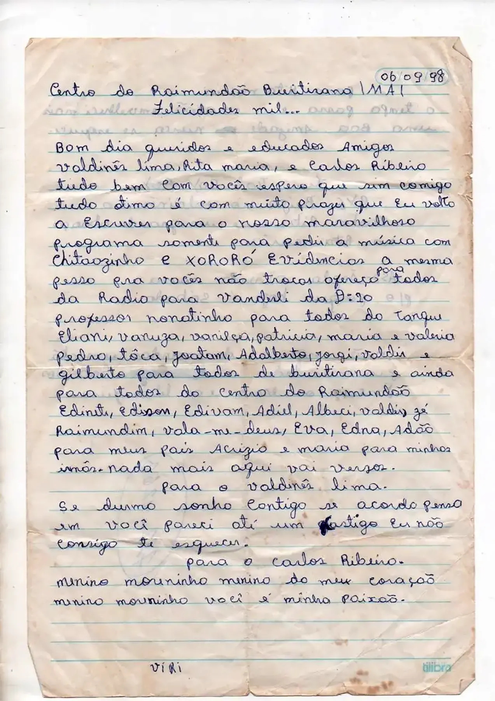
"Centro do Raimundão, Buritirana-MA, 6 de agosto de 1998.
Felicidades mil! Bom dia, queridos e educados amigos Valdineis Lima, Rita Maria e Carlos Ribeiro. Tudo bem com vocês? Espero que sim. Comigo está tudo ótimo. É com muito prazer que escrevo para o nosso maravilhoso programa, somente para pedir a música 'Evidências', de Chitãozinho e Xororó. A mesma peço a vocês que não troquem. Ofereço para todos da rádio, para Vanderli, da D-20, professor Nonatinho, para todos do Tanque, Eliani, Vanuza, Vanilça, Patrícia, Maria, Valéria, Pedro,
Touca, Joatan, Adalberto, Jorge, Valdir e todos da Buritirana."
Era tempo de esperar a locutora anunciar o nome do destinatário, abrir o envelope e ler a carta.
Em cada palavra, uma demonstração de carinho, saudade e amizade.
Ao reler essa carta, chama atenção não apenas o pedido musical, mas a quantidade de pessoas citadas. Cada nome carregava uma relação, uma amizade, um vínculo. O rádio funcionava como uma espécie de ponte: uma única mensagem era capaz de atravessar comunidades e alcançar diferentes pessoas ao mesmo tempo.
Naquele período, quando o acesso à internet ainda era inexistente para grande parte da população e o telefone não fazia parte da rotina de muitas famílias, as cartas enviadas aos programas de rádio assumiram um papel importante na comunicação entre pessoas que viviam em comunidades distantes. Por meio delas, os ouvintes mandavam recados, faziam pedidos musicais, enviavam abraços, declaravam amizades e mantinham vivos os laços com familiares e conhecidos.
O rádio encurtava distâncias. A voz do locutor levava a mensagem de uma comunidade a outra e devolvia ao ouvinte a sensação de estar próximo, mesmo quando havia quilômetros entre eles.
As cartas também revelavam a intimidade que os ouvintes construíam com os comunicadores. Era comum que, além dos pedidos musicais e dos recados, escrevessem versos, dedicatórias e palavras de carinho. Em uma das cartas que guardo, Ângela deixou uma pequena homenagem para mim:
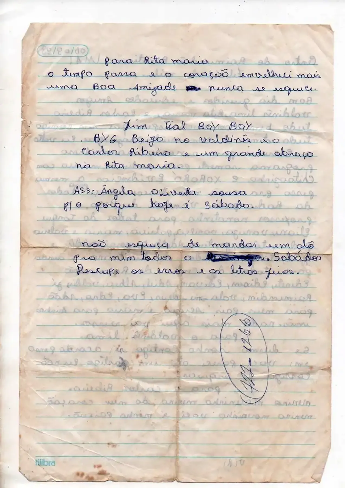
Cartas que marcaram minha trajetória como locutora e preservaram a memória dos laços construídos com os ouvintes da Rádio Imperatriz.
"Para Rita Maria, o tempo passa e o coração envelhece, mas uma boa amizade nunca se esquece."
Décadas depois, o papel permanece. A tinta pode ter perdido um pouco de intensidade, mas as palavras continuam contando uma história. São fragmentos de uma época em que esperar a música tocar, ouvir o próprio nome no rádio e receber uma carta eram formas de sentir-se lembrado, reconhecido e parte de uma comunidade.
Mais do que cartas, esses documentos guardam memórias afetivas de uma relação que o tempo não conseguiu apagar.
Memórias que o rádio guardou
Esta galeria reúne fragmentos de uma história construída ao longo do tempo. São fotografias, documentos, cartas, áudios e vídeos que preservam lembranças da minha trajetória profissional na Rádio Imperatriz e das experiências compartilhadas pelos moradores da Vila Conceição I.
Cada registro guarda uma parte dessa relação entre o rádio e seus ouvintes, revelando como as vozes, as notícias, as músicas e as mensagens transmitidas pelas ondas sonoras atravessaram gerações e permaneceram na memória.
[GRADE DE 25 ITENS — a ser renderizada dinamicamente a partir de assets/media-manifest.json — Etapa 6]
Sobre a autora
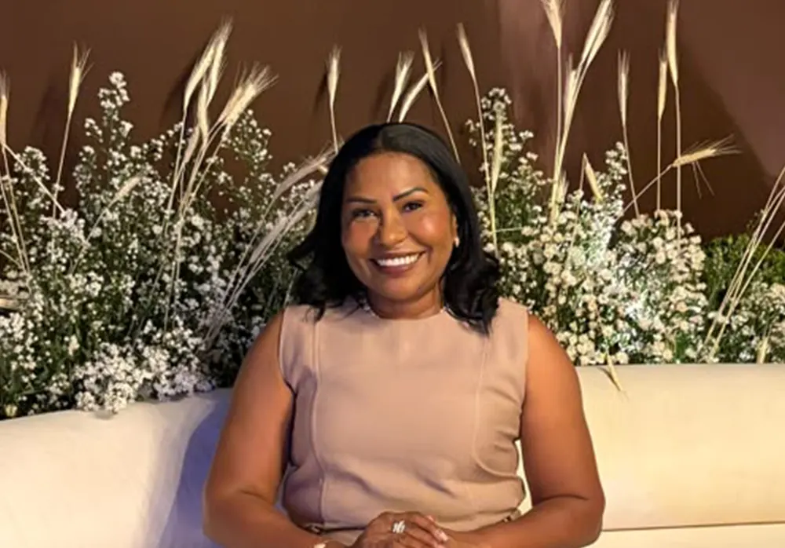
Minha trajetória seguiu um caminho diferente do que talvez eu tivesse planejado. Primeiro, trabalhei, casei-me, tive filhos e dediquei-me à educação deles. Mas nunca desisti do meu maior sonho: ingressar na universidade.
Hoje, aos 55 anos, estou realizando esse sonho e me graduando em Jornalismo. Uma conquista que representa muito mais do que um diploma: simboliza persistência, coragem, superação e a certeza de que nunca é tarde para recomeçar e realizar nossos sonhos.
Essa sou eu: Rita Maria da Silva Sousa, maranhense e nordestina, com muito orgulho!